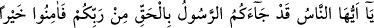

169- Ancak cehennem yoluna (iletecek ve) orada ebedî kalacaklardır. Bu da
Allah’a çok kolaydır.
Kendilerini cennete ulaştıracak olan salih amellerden ve Hak yolunu bulma
kabiliyetinden mahrum oldukları için onları “ancak cehennem yoluna” iletecektir.
Allah onları cehenneme götürecek kötü amellerini, ancak kendi kudret ve irâdeleriyle
işlemeye, elde etmeye emek sarfettikleri vakit yaratır. Yâhut Allah onları kıyâmet günü
melekleri vâsıtasıyla cehenneme sevk eder. Bu takdirde “yol kelimesi” umumi bir mana
ifâde etmiş olur.
“Orada” cehennemde “ebedî kalacaklardır.” Âyette “__WORD__ ” kelimesinden sonra “__WORD__” lafzı, inkar edenlerin cehennemde uzun bir süre değil, ebediyyen kalacaklarını
ifâde etmek için getirilmiştir. Uzun süre kaldıktan sonra inkarcıların cehennemden
çıkmaları ihtimalini ortadan kaldırmaktadır. “Bu da” yani onların cehennemde ebedî
olarak bırakılmaları “Allah’a çok kolaydır.” Asla muhal değildir. Murad ettiği bir
şeyde O’nun için zorluk yoktur.
Şunu bil ki Allah’ın ruhları yarattığı gün onların üzerine saçılan nurdan kendisine
zerre kadar isabet edeni o nur mutlaka cehennemden çıkaracaktır. Nitekim Peygamber
(a.s) şöyle buyurmuştur: “Kalbinde zerre kadar îman olan, cehennemden çıkar.”[213]
Yaratıldıkları gün ruhlar üzerine saçılan ilâhî nurdan kendisine isâbet etmeyen talihsiz
kişi de, ebediyyen cehennemden çıkamaz. Çünkü o, büyük bir zulmet içindedir.
Hakiki kula gereken, Allah’ın ve meleklerin şâhitlik ettiğine şehâdet etmektir. Allah’ın
Rasûlü’nün ve ilmiyle âmil olan âlimlerden ibâret olan vârislerinin sözünü kabul
etmektir. Çünkü böyle âlimler, Allah ve Rasûlü adına konuşurlar.
Şakîk Belhî der ki: “Benim meclisimde bulunan insanlar şu üç sınıftan birine dâhil
olarak ayrılırlar: Hâlis mü’min, hâkîkî kâfir ve gerçek münâfık. Çünkü ben Kur’ân’ı
tefsîr eder, Allah’ın emirlerini ve Rasûlullah (s.a.v)’in hadislerini açıklarım. Kim beni
tasdik etmez ise o kâfirdir. Bu işittiklerinden dolayı kalbinde bir sıkıntı meydana gelen
münâfıktır. Yaptığı hatalardan pişmanlık duyup da bir daha günah işlememeye azm eden
ise hâlis bir mü’mindir.”
İşin başı îtikattır. Bunun için de önce ilim gerekir. İkinci olarak da amel. Çünkü amel,
ilmin semeresidir.
Peygamber (a.s)’a: “İlim nedir?” diye soruldu. “Amelin delili (rehberi) dir.” buyurdu.
“Akıl nedir?” diye soruldu. “Hayrın önderidir.” buyurdu. “Hevâ nedir?” diye soruldu.
“Günahların bineğidir.” cevâbını verdi. “Mal nedir?” diye soruldu.“Mütekebbirlerin
örtüsüdür” buyurdu. “Dünya nedir?” diye soruldu. “Âhiretin çarşısıdır.” cevabını
verdi.